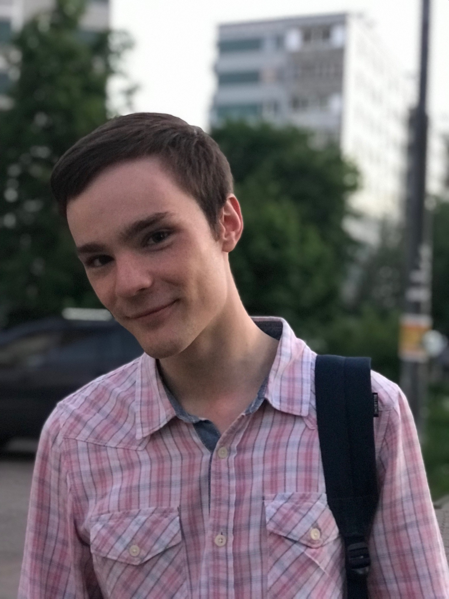

My page

This is my page made especially for the КИЛИ.
Who am I?
My name is Yury Makarov. I'm a student at HSE. Linguistics is of great interest to me.
Some other stuff to make us acquainted
I like to play the piano. Though I finished a music school where I was taught to play from music, I find playing by ear more exciting.
English doesn't seem boring to me, though many linguists say it's just a tool.
I learn Persian, and it's really cool.
The thing is that I wanted to choose the MSU as a place to study but at the eleventh hour, I decided to go to Higher School of Everything :)
Oh, by the way! I should show my skills as a web designer. Well...
Italic symbols are cool.
Bold are cool too.
Multicolorisation is good only if moderate.
Finally, Times New Roman is a changeable thing. So is scale.